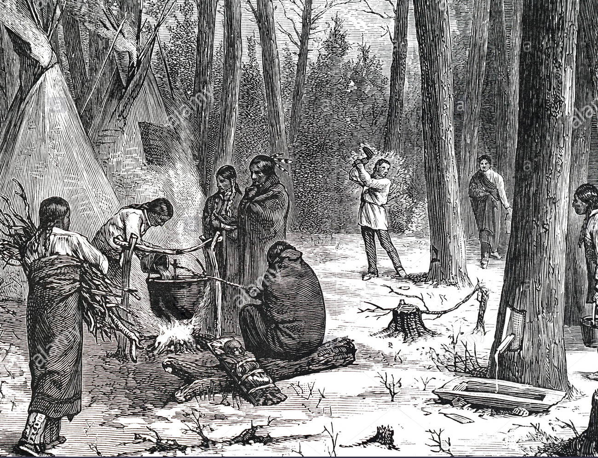

Ahornsirup Fans
Alles was du über Ahornsirup wissen wolltest
Geschichte
Legende
Der Überlieferung nach soll einem Jäger der Irokesen bei der Heimkehr der süße und aromatische Duft über der Kochstelle aufgefallen sein. Seine Frau hatte offenbar Regenwasser aus einem ausgehöhlten Stamm unterhalb eines Ahornbaumes verwendet. Als auch die Speise süß schmeckte, erkannte man den Zusammenhang. Fortan hackten die Indianer ihre Tomahawks in die Rinde der Ahornbäume und fingen den herausrinnenden Saft auf. Sie legten erhitzte Steine (Kochsteine) in den Saft und erzeugten so den dickflüssigen Sirup.
Früher
Die Herstellung von Ahornsirup wurde von den Indianervölkern im Nordosten Nordamerikas erfunden. Von Ende Februar bis April, sobald längerer Sonnenschein tagsüber schon für höhere Temperaturen sorgt, nachts aber noch der Frost herrscht, beginnen die Bäume, in den Wurzeln gespeicherte Nährstoffe in die Knospen zu transportieren. Durch Anbohren des Stammes kann ein Teil des Pflanzensaftes entnommen werden, ohne dem Baum bedeutenden Schaden zuzufügen. Der gesammelte Pflanzensaft wird traditionell durch Kochen über einem Holzfeuer eingedickt, bis der Sirup einen Zuckergehalt von etwa 60 % hat. Durch das Kochen karamellisiert der Zucker und gibt dem Sirup einen Teil seines charakteristischen Aromas. Ein kleiner Teil der Ernte wird zu Ahornzucker weiterverarbeitet.
Heute
Heute verbindet man die Bäume über regelrechte Plastikpipelines mit Sammelcontainern. Aus diesen wird der Saft automatisch in Tankwagen gepumpt, die den Rohstoff in zentrale Produktionsstätten bringen, wo er zu Sirup eingekocht wird. Im Amateurbereich feiert man die Prozedur des Einkochens mit der traditionellen Sugaring-off Party. Für einen Liter Ahornsirup werden etwa 30 bis 50 Liter Saft benötigt, die ein einzelner Baum in etwa zwei Wochen hervorbringen kann. Erst ab einem Alter von 40 Jahren eignen sich die Bäume zum Entsaften. Das Hauptproduktionsland ist Kanada (80–90 % der weltweiten Produktion werden in und nahe der Provinz Québec erwirtschaftet), in den USA gilt Vermont als Hochburg des Ahornsirups. Neuerdings wird auch Umkehrosmose verwendet, um den Sirup herzustellen. Farbe und Geschmack eines so hergestellten Sirups unterscheiden sich allerdings vom Originalprodukt.
Herstellung
Wie reiner Ahornsirup hergestellt wird
Reiner Ahornsirup wird hergestellt, indem der leicht süße Saft des Zuckerahornbaums durch Erhitzen und Verdampfen konzentriert wird.Im Frühling, wenn die Tage Ende Februar oder Anfang März länger und wärmer werden, bereiten wir den Zuckerstrauch vor, indem wir den Schnee und die heruntergefallenen Glieder von den Zufahrtsstraßen räumen. Dann richten wir unsere Saftsammelsysteme ein. Es gibt zwar keine feste Zeit, unsere Ahorne anzuzapfen, aber wir achten sorgfältig auf die Anzeichen für "zuckerhaltiges Wetter". Die milderen Tagestemperaturen bringen schmelzenden Schnee, während die Nächte unter dem Gefrierpunkt liegen. Dies ist das Wetter, das den Saft fließen lässt. Das ist der Zeitpunkt, an dem wir anfangen, unsere Bäume anzuzapfen. Normalerweise dauert unsere Zuckersaison 4 bis 6 Wochen.
Das Anzapfen von Ahornbäumen mit baumfreundlichen "Gesundheitsspritzern" beinhaltet das Bohren kleinerer, saftführender Löcher etwa hüfthoch. In dieses Loch wird ein Ausguss gebohrt, und wenn die Temperatur über den Gefrierpunkt steigt, fließt der Saft durch den Ausguss und wird durch ein Rohrsystem zu den Sammelbehältern transportiert. Ein typischer Baum hat einen Durchmesser von mehr als 12 Zoll und hat einen oder zwei Hähne. Jedes Hahnloch ergibt etwa 10 Gallonen Saft, genug, um etwa ein Viertel des Ahornsirups herzustellen. Jeder der Bäume, die wir anzapfen, ist mindestens 40 Jahre alt und in ausgezeichneter Gesundheit.
Wenn die Bäume angezapft sind und die gesamte Ausrüstung bereit ist, sind wir bereit für den "ersten Durchlauf" - das erste Mal in der neuen Saison, wenn der Saft zu fließen beginnt. Typischerweise ist der Saft eine klare, leicht süße Flüssigkeit, die etwa 1- 4% Zucker enthält. Längere Perioden mit Temperaturen unter dem Gefrierpunkt, Tage ohne Frostnächte oder längere Wärmeperioden stoppen den Saftfluss. Wenn die Bedingungen wieder günstig werden, wird der Fluss wieder aufgenommen, und ein weiterer "Saftlauf" beginnt. Um Ahornsirup von feinster Qualität herzustellen, wird der Saft in große Lagertanks im Zuckerhaus gebracht, fließt dann in den Verdampfer und wird so schnell wie möglich verdampft.
Die Verdampfer sind niveaubeheizte (holz- oder ölbeheizte) Pfannen, die sich im Laufe der Jahre kaum verändert haben. Wenn das Wasser abgekocht wird, wird die Flüssigkeit süßer (konzentrierter) und beginnt, sich nach vorne zu bewegen. Dort sehen wir, wie der kochende Saft golden wird. Wir überprüfen häufig die Temperatur der kochenden Flüssigkeit. Wenn sie 7F Grad über dem Siedepunkt des Wassers erreicht, ist sie zu Ahornsirup geworden. Was 98% Wasser und 2% Zucker war, ist jetzt 33% Wasser und 67% Zucker. Der süßlich duftende Dampf, der aus dem Zuckerhaus aufsteigt, ist für die Menschen (und die neugierigen Bären) ein sicheres Zeichen dafür, dass die Saison der Zuckerherstellung in vollem Gange ist!
Wenn der fertig gekochte Sirup aus der Pfanne gezogen wird, wird er gefiltert und verpackt. Abhängig von bestimmten wetterbedingten Variablen ergeben 40 Gallonen Saft etwa eine Gallone reinen Ahornsirup.
Qualitätsgrade
Die Farbe und der Geschmack von reinem Ahornsirup variiert während der Abzuckerungszeit. Natürliche Aromen werden durch natürliche Faktoren beeinflusst. Zu Beginn ist der Sirup in der Regel klar mit einem leicht süßlichen Geschmack. Später in der Saison wird der Sirup dunkler und karamellisierter. Ahornsirup wird aufgrund seiner Farbe und seines Geschmacks klassifiziert, so dass Feinschmecker und Köche ihre Wahl entsprechend ihrem Verwendungszweck treffen können.
Das Klassifizierungssystem für Ahornsirup umfasst vier Klassen:
Goldener delikater Geschmack: Dieser Sirup stammt aus Saft, der gleich zu Beginn der Zuckerschnitt-Zeit geerntet wird. Er zeichnet sich durch seinen leichten Goldton und seinen süßen, delikaten Geschmack aus. Er ist ein köstlicher Belag für Joghurt und Eiscreme.
Bernsteinreicher Geschmack: Dieser Sirup hat einen reinen, reichen Geschmack und eine attraktive bernsteinfarbene Farbe. Er ist ideal als Zutat für Vinaigrettes und alle Arten von Gerichten und Desserts.
Dunkler, robuster Geschmack: Dieser Sirup mit seinem ausgeprägteren, karamellisierten Geschmack eignet sich gut zum Kochen, Backen und für Soßen. Er wird dafür gefeiert, dass er den Geschmack von fruchtigen Gerichten verstärkt.
Sehr dunkler, kräftiger Geschmack: Dieser Sirup ist das Produkt von Ahornsaft, der am Ende der Abzuckerungssaison geerntet wird. Sein Geschmack, ausgeprägter als alle zuvor aufgeführten Sirupe, ist reich und unverwechselbar. Er färbt und parfümiert Soßen und Glasuren in Perfektion.